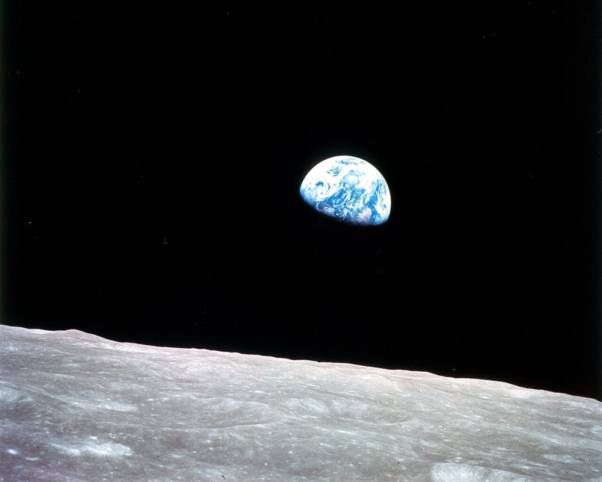
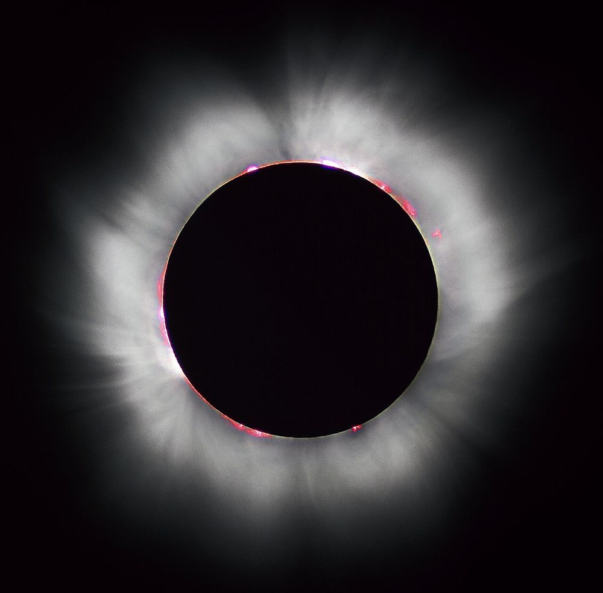

1Gökyüzündeki büyüklük yanıltıcı
Gece gökyüzüne baktığımızda Ay oldukça büyük görünür. Ufka yakınken daha da büyük görünür. Bu da aslında bir göz yanılmasıdır, Ay'ın boyutu değişmez.
Ay gerçekte Dünya'nın yaklaşık dörtte biri büyüklüğündedir. NASA'ya göre Ay'ın çapı yaklaşık 3.475 kilometredir.

2Avustralya ile karşılaştırma
Avustralya kıtasının doğudan batıya genişliği yaklaşık 4.000 kilometredir. Yani Ay'ı bir harita üzerinde Avustralya'nın üzerine yerleştirseydiniz, kıtanın doğu ve batı uçları Ay'ın kenarlarından taşardı.
Bir başka karşılaştırma: İstanbul ile Pekin arasındaki kuş uçuşu mesafe yaklaşık 7.000 km'dir. Ay'ın çapı bunun yarısından azdır.
3Ama işin bir inceliği var
Ay bir küredir, Avustralya ise Dünya'nın yüzeyinde düz bir kara parçası. Karşılaştırdığımız şey yalnızca bir uçtan diğerine olan genişliktir.
Yüzey alanını karşılaştırırsak tablo tersine döner. Ay'ın toplam yüzey alanı yaklaşık 38 milyon km²'dir. Bu, Avustralya'nın yaklaşık 7,7 milyon km²'lik yüzölçümünün yaklaşık beş katıdır.

4Ay hakkında birkaç gerçek
Ay'ın en yaygın kabul gören oluşum açıklaması, yaklaşık 4,5 milyar yıl önce Mars büyüklüğünde bir gök cisminin genç Dünya'ya çarpmasıdır. Bu çarpışmada saçılan parçalar birleşerek Ay'ı oluşturdu.
Ay Dünya'ya hep aynı yüzünü gösterir. Çünkü kendi etrafında dönme süresi ile Dünya etrafında dolanma süresi aynıdır. Bu yüzden Ay'ın 'arka yüzünü' ancak 1959'da bir Sovyet uzay aracının çektiği fotoğraflarla görebildik.
💡 Biliyor muydun?
- Güneş Ay'dan yaklaşık 400 kat büyüktür ama yaklaşık 400 kat da uzaktır. Bu tesadüf sayesinde tam güneş tutulmalarında Ay, Güneş'i neredeyse tam örter.
- Ay'daki yerçekimi Dünya'dakinin yaklaşık altıda biridir.
- Ay'a bugüne kadar 12 insan ayak bastı. Hepsi 1969-1972 arasındaki Apollo görevlerindeydi.
✅ Kaynaklar
📷 Görseller
- Kapak: Gregory H. Revera · CC BY-SA 3.0 · Wikimedia Commons
- Apollo 8 astronotlarının 1968'de Ay'ın yörüngesinden çektiği ünlü 'Dünya'nın Doğuşu' fotoğrafı: Apollo 8 crewmember Bill Anders · Public domain · Wikimedia Commons
- Tam güneş tutulması: Luc Viatour · CC BY-SA 3.0 · Wikimedia Commons